E arlier this year, I spent 10 weeks travelling with the photographer Kiana Hayeri across seven provinces of Afghanistan, speaking to more than 100 Afghan women and girls about how their lives had changed since the Taliban swept back to power three years ago.
Hayeri and I both lived in Afghanistan for years, and remained here after the Taliban took control in August 2021. In the past few years, we have seen women’s rights and freedoms, already severely curtailed, swept away as Taliban edicts have fallen like hammer blows.
In just over three years, Afghan women have been banned from nearly every aspect of public life: schools, universities, most workplaces – even parks and bathhouses. From Kandahar, the birthplace and political headquarters of the Taliban, the group’s leaders have dictated that women must cover their faces in public, always be accompanied by a man and never let their voices be heard in public.
As foreign women, we still carried the rare privilege of freedom of movement (although I doubt we could now travel as we did at the beginning of this year), which has nearly disappeared for the 14 million Afghan women and girls across the country. Meeting women while ensuring their security was a daily challenge.

Mitra plays with children in Yamit district, near the Wakhan mountains. Her daughter and her cousin, who were both grade 11 pupils aged about 17, took their own lives in these pools last year
Each province we travelled to revealed different shades of oppression. In some areas – in the south and east in particular – women were already living under very restricted conditions before the Taliban’s official return, with many saying that now, at least, there was no more violence. In other places, the sudden loss of freedom has been devastating.
For many, the Taliban’s refusal to allow girls to attend secondary education has been the hardest blow.
We met Gulsom, 17, who survived a suicide attack on her school just a few months before the Taliban came back into power. Severely wounded and left unable to walk, she must now use a wheelchair and had to continue her studies at an underground school.
But Gulsom insisted: “My will to study and work hard has increased.”
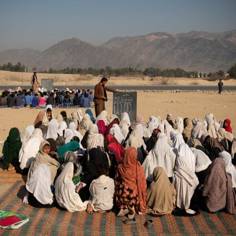In Gardi Ghos district, primary-school classes – which are still legal for girls up to the age of 11 – are set up by two main roads with no shade
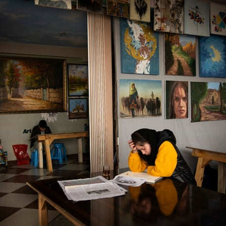Girls attend art classes at a shop inside a west Kabul shopping centre
Yet her younger sister, who is 14, seems to have lost hope. She has left the house only a few times in more than two years.
Gulsom said: “[In 2021] she went to school on the day they were supposed to open, but she returned crying. [The Taliban] fired [shots] to disperse the girls, as they were asking when will the schools would open. She said the Taliban beat two girls and warned them not to leave their homes.”
Since then, she has sunk into a deep depression. Gulsom said: “She always asks me, ‘What is the use of studying this much? At the end you will die. I don’t work hard, I will die; and you work hard, you will die too. I want to die in peace.’”
We spoke to many girls who no longer see the value of trying to continue their education at home when they cannot graduate from school, cannot work and cannot imagine a future for themselves.
For some of the young women we met, being barred from school now means they have to try to find a job or get married, like the young women in one province who spend their days sewing school uniforms for the young girls still allowed into the primary classroom.
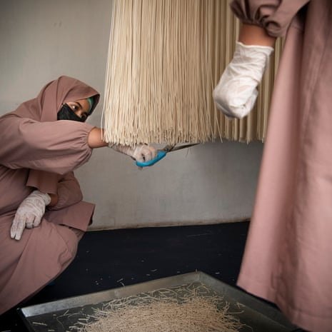Asaa, 21, and Nazbibi, 20, work at a women-led spaghetti factory in Kabul, set up in 2021 to create jobs for women unable to work or study
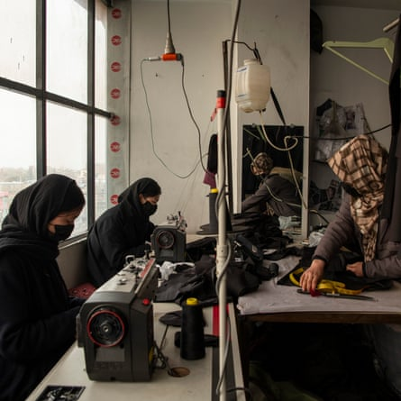Sewing uniforms for younger girls in a Kabul garment workshop; above right, Maryam, 14, was determined to continue her education but has had to become engaged to her landlord’s son in Jalalabad
We also saw how the economic crisis gripping the country since the Taliban took power has proved catastrophic for many girls and women.
At only 14, Maryam has been forced to become engaged to her landlord’s son in exchange for a well and solar panels, after her family could not find work.
Her family was part of the wave of returnees expelled from Pakistan in late 2023. As undocumented refugees, they were harassed into leaving by the Pakistani police. They are now struggling to rebuild their lives, with few job prospects and virtually no social security assistance.
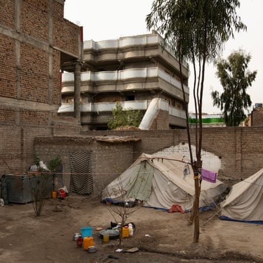Afghans who had fled the country but were forced to leave Pakistan last year have to live in tents in the city of Jalalabad
“I went to a madrasa in Pakistan, but here I cannot go,” she told us. “I’m good at reading and writing. When I heard that we were coming back to Afghanistan, we were very happy and excited, but I’d rather live in Pakistan – there I could at least pursue my education.”
In Zabul and Kabul, we visited hospitals and saw how malnutrition was one of the most corrosive effects of the poverty faced by many Afghan women and their families.
Fatima is only two and a half years old, and weighs 5kg (11lb). When we met her in a malnutrition ward in the suburbs of Kabul, she had been admitted to hospital for the third time because her family did not have enough money to buy food.
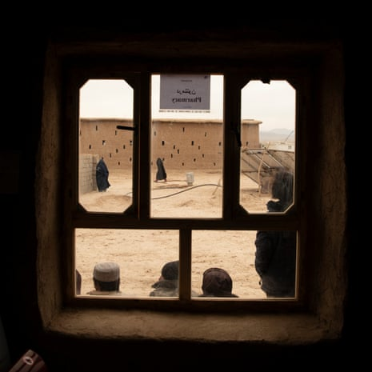A European Union-funded clinic in Bakorzai offering women’s health services, such as antenatal and postnatal care, and family planning
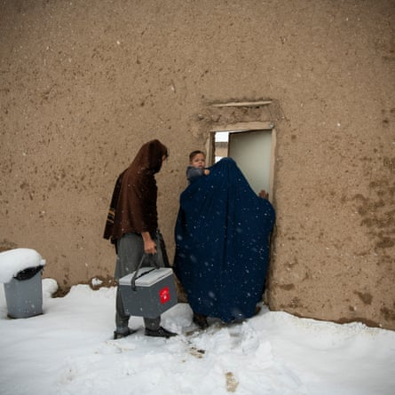A female aid worker, chaperoned by her husband, arrives at work in a snowstorm in Patkheyl, Zabul; above right, Fatima (sitting on the bed on the left) was admitted to hospital in Kabul aged two and a half weighing just 5kg (11lb)
Gender inequality is fuelling this crisis: nurses told us that they were treating more female children because when food is scarce, families prioritised feeding the boys.
It was important for us to look beyond the traditional representations of Afghan women as passive victims of the Taliban and show them as active players in their own lives.
We wanted to show their strength in the face of this absurd and brutal regime, including through acts of resistance: attending underground education networks or creating informal gatherings – whether it is a snowball fight, a birthday party, art classes or henna painting.
These acts, though small, are profound forms of resistance against the Taliban’s efforts to strip away and deny their humanity – perhaps the deepest form of violence that is being inflicted against millions of women and girls across the country.
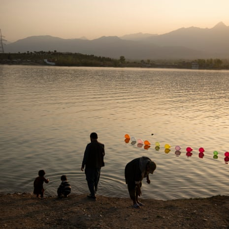Men picnic at Qargha lake in Kabul. Women are banned from visiting all parks
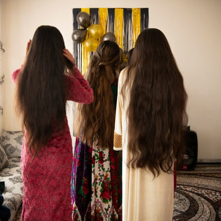Teenage girls at their friend’s birthday at her house in Kabul; girls dance at another Kabul birthday party. Music and dancing have been forbidden by the Taliban but, despite the ban, women continue to celebrate behind closed doors
Many are battling against a rising tide of despair. Zahra, a young women’s rights activist, organised online protests after the Taliban began brutally repressing demonstrations: “Since we cannot protest in the streets any more, we do it from home: with the masks, with the hijab, in front of the camera.
“Five to 10 women do these videos, and we then send them to the media, in order to still raise our voices,” she told us.
Yet in the months since we interviewed her in Kabul, she has lost hope that her activism could change anything and has left the country to live in exile. “Now I see there is no way to stay here; I would waste my time, waste my life,” she says. “There is no improvement possible. I cannot be a human being here. There is nothing.”
After 10 weeks of listening to women’s stories, we came away from Afghanistan certain that what is happening there is more than repression: it is an attempt to erase women completely.
On 18 June, Richard Bennett , the UN special rapporteur on human rights in Afghanistan, backed calls to codify gender apartheid in Afghanistan as a crime under international law, defining what was happening as “a profound rejection of the full humanity of women and girls” based on their gender alone.
Even in those provinces where more sympathetic Taliban commanders looked the other way, allowing underground schools to continue and for women to work and move around the streets more easily, their freedom is still dependant on the decisions and whims of men in power.
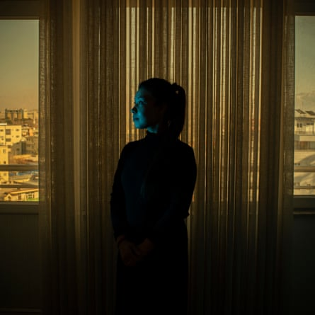Zahra, 26, worked at the ministry of transport and aviation until the fall of Kabul in August 2021. She became an activist but has now left the country. ‘When they leave, we’ll come back,’ she said
In Afghanistan, where women’s every freedom has been repressed, where they cannot show their faces any longer or make their voices heard in public, it is more important than ever to carry their voices, ensuring they do not disappear into silence.
Today, their hearts are tightened not only by the weight of repression but by the indifference of a world that seems to have forgotten them. Their stories deserve to be heard.
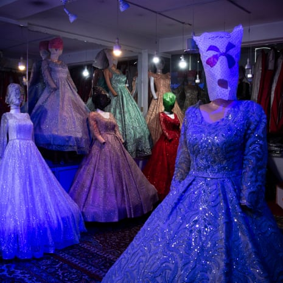Mannequins in wedding dresses. Shops are forbidden from showing any representation of women’s faces, even tailors’ dummies, so some shopkeepers cover their heads with plastic bags
All names have been changed to protect identities
This report was produced with the support of the Carmignac Photojournalism Award